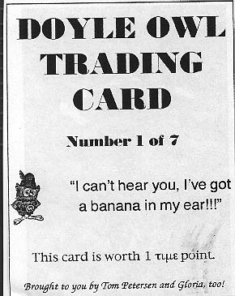
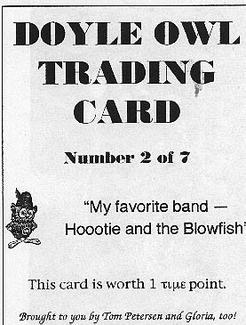
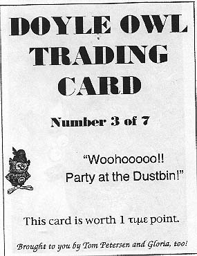
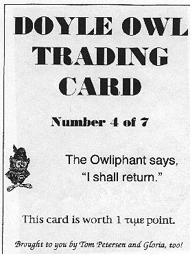

Doyle Owl Trading Cards
The following are a sample of the trading cards distributed by the
Doyle Owl Patrol. The back of each one had a relevant picture of the
Owl (you can see some of those pictures on the
pictures page).




Main Doyle Owl page
Squirrel's home page